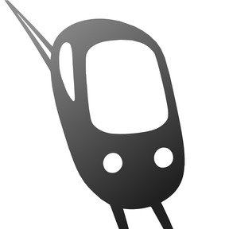
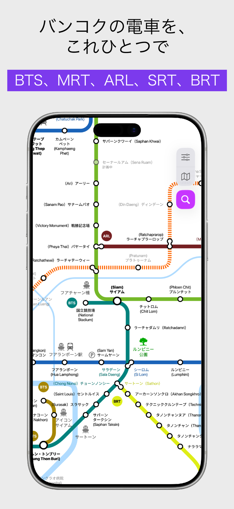
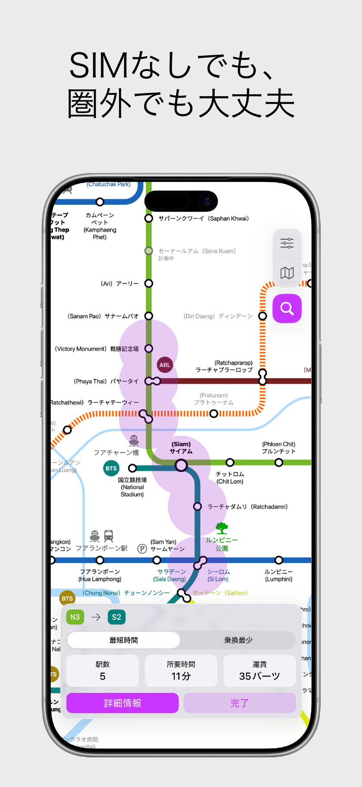
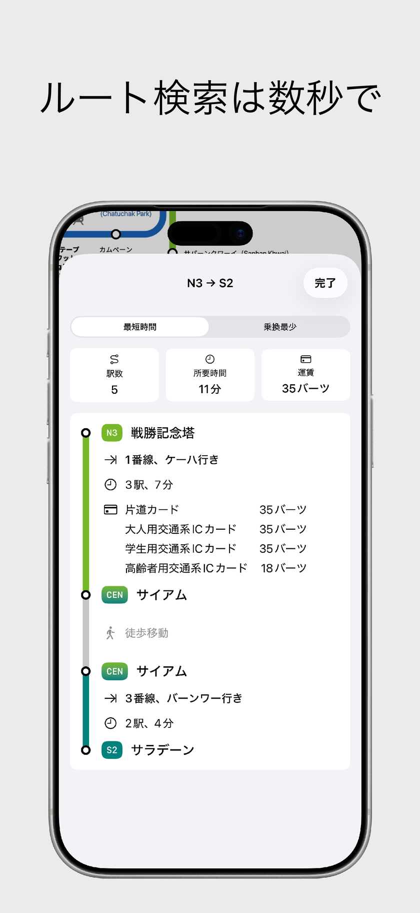
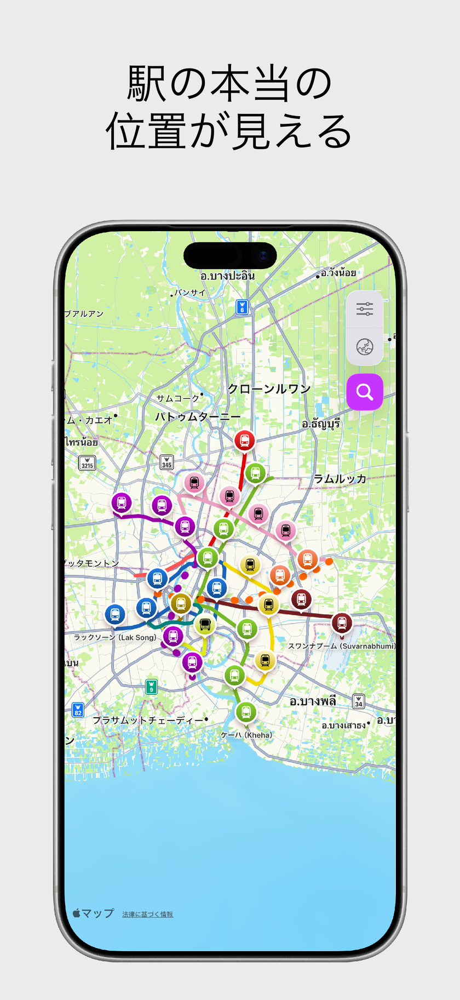
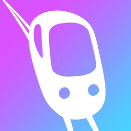
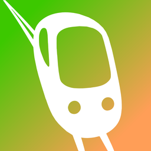

100% オフライン動作
SIMカードやWi-Fi、ローミング不要。地下や電波の届かない場所でもルート検索や路線図の確認が可能です。

オフライン都市鉄道・地下鉄ガイド





バンコクの鉄道を網羅した乗換ガイド。BTSスクンビット線・シーロム線・ゴールドライン、MRTブルー/パープル/イエロー/ピンクライン、ARL空港線、SRTレッドラインに対応。

クランバレーおよびクアラルンプールの鉄道路線ガイド。Rapid KL LRT各線、MRTカジャン線/プトラジャヤ線、モノレール、KTMコミューター、KLIAエキスプレスに対応。
SIMカードやWi-Fi、ローミング不要。地下や電波の届かない場所でもルート検索や路線図の確認が可能です。
最短ルート、乗換駅、正確なチケット運賃、所要時間を瞬時に検索・比較できます。
見やすい概念図スタイルの路線図と、実際の道路・位置関係に即した地理マップを簡単に切り替えられます。
各駅の運行スケジュールと終電時刻を完全収録。旅先でも終電を逃す心配がありません。
目的地に一番近い出口番号と、周辺のショッピングモールや観光スポットの案内マップを収録。
日本語、英語、タイ語、マレー語、韓国語、中国語で駅名をすばやく検索できます。
City Metroはユーザーの個人情報や移動履歴を収集・トラッキングしません。すべてのルート検索処理は端末内でのみ安全に実行されます。
はい。City Metroは100%オフライン対応設計です。ルート検索、路線図の閲覧、時刻表確認、駅出口案内などすべての機能がオフラインで動作します。
バンコク（BTSスクンビット線・シーロム線・ゴールドライン、MRTブルーライン・パープルライン・イエローライン・ピンクライン、ARL空港線、SRTレッドライン、BRT）およびクアラルンプール（Rapid KL LRT、MRT、KLモノレール、KTM、ERL空港特急）に対応しています。
はい、City MetroアプリはApple App Storeから無料でダウンロードしてご利用いただけます。
いいえ。City Metroは個人情報、位置情報の履歴、検索履歴などを一切収集・保存・送信しません。すべての計算はお使いの端末内で完結します。
iPhone および iPad の App Store にて配信中。